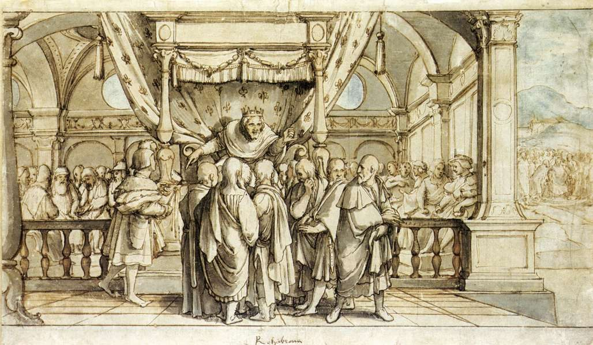

1 Reyes 12 — La Traducción Mister

1 Reyes 12:13–14. El título es el que se usa para el dibujo. Los versículos dicen que el rey respondió al pueblo con dureza y habló conforme al consejo de los jóvenes; no dicen que se sentara bajo un dosel, ni describen el lugar, y en Siquem no se menciona ningún palacio. Holbein lo dibujó para la sala de un consejo municipal.

Notas del traductor — versículo por versículo
¿Por qué Siquem? «Roboam fue a Siquem; porque todo Israel había venido a Siquem para hacerlo rey»: la línea de David reina desde Jerusalén, y aquí el hijo tiene que viajar al norte para ser hecho rey. El versículo no dice por qué, pero el lugar tiene historia: Josué reunió allí a todas las tribus e hizo pacto (Josué 24:1, 25, ya en estas páginas), y allí están los huesos de José (Josué 24:32). Siquem ya había hecho rey antes, a Abimelec, con mal fin (Jueces 9:1, ya en estas páginas).
¿Habitando en Egipto, o de vuelta? «Jeroboam habitaba en Egipto»: las letras son וישב, que pueden leerse «habitó» o «volvió». Reyes tiene lo primero y añade «en Egipto»; el paralelo tiene lo segundo y «de Egipto» (2 Crónicas 10:2). El versículo 3 escribe el verbo siguiente de dos maneras, «vinieron» como está escrito y «vino» como se lee. La historia tiene otro nudo: Jeroboam habla a Roboam en el versículo 3 y en el 12, pero en el versículo 20 todo Israel oye entonces «que Jeroboam había vuelto». La Biblia griega no tiene a Jeroboam en el versículo 3, solo «el pueblo». Esta página imprime el hebreo.
«Dura servidumbre». «Tu padre hizo duro nuestro yugo; y tú, aligera ahora la dura servidumbre de tu padre»: aparte de este versículo, avodah qashah en esta forma está en tres versículos de la Biblia hebrea, y los tres son Egipto: «amargaron su vida con dura servidumbre» (Éxodo 1:14), Éxodo 6:9, y «pusieron sobre nosotros dura servidumbre» (Deuteronomio 26:6, ya en estas páginas). Las tribus le dicen al hijo de Salomón que su padre las trató como el faraón. El narrador había dicho «de los hijos de Israel Salomón no hizo esclavo» (1 Reyes 9:22, ya en estas páginas); esta es la versión de la otra parte. La palabra para «yugo» es ol. La RV 1909 y la RV60 dicen «la dura servidumbre», la NVI «el duro trabajo», y la TNM 1987 «el duro servicio». Nótese que ofrecen condiciones: «y te serviremos».
Dos consejos. Los ancianos «habían estado delante de Salomón»; los jóvenes «se habían criado con él». La palabra para ellos es yeladim, «muchachos», y Roboam tenía cuarenta y un años cuando empezó a reinar (1 Reyes 14:21), de modo que la palabra dice más que su edad. El consejo de los ancianos gira sobre una palabra, «siervo»: «Si hoy eres siervo de este pueblo y les sirves … serán tus siervos todos los días». Es la oferta del versículo 4 devuelta. La RV 1909 y la RV60 conservan «siervo», y la NVI dice «se pone hoy al servicio». «Abandonó el consejo»: es el verbo que Jehová usa de los que «me han abandonado» en el capítulo anterior (1 Reyes 11:33, ya en estas páginas).
«Mi pequeño». «Mi pequeño es más grueso que los lomos de mi padre»: el hebreo es qotni, que con este sentido está en dos versículos de la Biblia hebrea, aquí y en el paralelo (2 Crónicas 10:10). No hay palabra para «dedo». La RV60 añade «el menor dedo», la NVI «Mi dedo meñique», y la TNM 2019 «Mi meñique». Los jóvenes están siendo claramente groseros, y «lomos» lo delata. Dedo es una lectura; algunos estudiosos oyen una jactancia más cruda, y el texto lo deja ahí. Esta página imprime lo que imprime el hebreo.
Azotes y escorpiones. «Mi padre los castigó con azotes, y yo los castigaré con escorpiones»: la palabra aqrabbim es la palabra común para escorpiones, como en el desierto de Deuteronomio 8:15 (ya en estas páginas). Si nombra al animal como figura o algún látigo con púas, el versículo no lo dice. La RV 1909 y la RV60 dicen «escorpiones», la NVI «una vara» y «un látigo», y la TNM 2019 «látigos de puntas afiladas».
«Con dureza». «El rey respondió al pueblo con dureza»: qashah, la palabra de su queja en el versículo 4, «duro». Le pidieron que aligerara lo duro, y les da más. La RV 1909 y la RV60 dicen «duramente», la NVI «con brusquedad» y la TNM 1987 «con dureza».
Un giro de parte de Jehová. «Porque fue un giro de parte de Jehová»: el sustantivo sibbah está en un versículo de la Biblia hebrea, este, y el paralelo usa una forma relacionada (2 Crónicas 10:15). El narrador sostiene dos cosas a la vez: Roboam eligió, y fue de parte de Jehová. Ninguna anula a la otra. La RV 1909 dice «ordenación de Jehová», la RV60 «designio de Jehová», y la TNM 1987 «el que los asuntos tomaran otro giro». La palabra la dijo Ahías (1 Reyes 11:31, ya en estas páginas).
Un grito antiguo. «¿Qué parte tenemos en David?»: Seba hijo de Bicri tocó el cuerno casi con estas palabras, «No tenemos parte en David, ni herencia para nosotros en el hijo de Isaí» (2 Samuel 20:1, ya en estas páginas). Aquella rebelión terminó con su cabeza arrojada por el muro (2 Samuel 20:22). Esta no termina. «Parte» y «herencia» son chelek y nachalah, las palabras de la tierra. El pueblo ha vuelto el lenguaje de la tierra contra una dinastía.
¿Tiendas o dioses? «¡A tus tiendas, Israel!»: el hebreo es le-ohalekha. La forma está en dos versículos de la Biblia hebrea, este y su paralelo (2 Crónicas 10:16). La RV60 dice «¡Israel, a tus tiendas!», y la NVI «todos a sus casas». La TNM 1987 dice «A tus dioses, oh Israel», y la TNM 2019 «vete con tus dioses». Las dos palabras usan las mismas letras en otro orden, y se informa de una tradición judía según la cual los escribas las cambiaron, pero el texto que tenemos dice tiendas, y el final del versículo lleva a Israel «a sus tiendas». «¡Mira ahora por tu casa, David!»: la «casa» que Jehová le edificó (2 Samuel 7:16, ya en estas páginas) se le arroja de vuelta.
Adoram. «El rey Roboam envió a Adoram, que estaba sobre los trabajos forzados»: de todos los hombres que podía enviar. El nombre es Adoram, como en la lista de David (2 Samuel 20:24), y en la de Salomón es Adoniram (1 Reyes 4:6; 5:28, todos ya en estas páginas). La Biblia griega tiene Adoniram aquí. «Lo apedreó con piedras»: el hombre que dirigía la leva muere a manos de los reclutados. El rey que amenazó con escorpiones «se apresuró a subir al carro».
«Hasta este día», y Judá sola. «Israel se ha rebelado contra la casa de David hasta este día»: el verbo es pasha, una palabra para romper la fidelidad, y «hasta este día» es del narrador, que escribe después. La RV 1909 y la RV60 dicen «se apartó», y la TNM 1987 «su sublevación». «Sino la tribu de Judá sola»: la «única tribu» del capítulo anterior (1 Reyes 11:32, ya en estas páginas). Para el versículo 20 la palabra de Ahías ya ha ocurrido.
¿El duodécimo pedazo? «Toda la casa de Judá y la tribu de Benjamín»: la frase anterior decía «la tribu de Judá sola», y ahora son dos. El manto del capítulo anterior tenía doce pedazos, diez para Jeroboam y «una» para la línea de David, y uno de sobra (1 Reyes 11:30–32, ya en estas páginas). Benjamín puede ser la respuesta, y los «dos cetros» de la Biblia griega pueden contar de la misma manera, pero el hebreo no los relaciona.
«Esto es de mí». «No subirán ni pelearán contra sus hermanos»: Semaías aparece aquí por primera vez en Reyes, y el rey que no quiso escuchar al pueblo escucha esto. La palabra para lo ocurrido es de Jehová mismo, «de mí», como dijo el narrador en el versículo 15. «Escucharon la palabra de Jehová»: el verbo del capítulo. Roboam no escuchó en el versículo 15; aquí sí, y el norte sigue perdido. «De mí» en esta forma está en dos versículos de la Biblia hebrea, este y el paralelo (2 Crónicas 11:4). La RV60 dice «esto lo he hecho yo», la RV 1909 «este negocio yo lo he hecho», y la NVI «es mi voluntad que esto haya sucedido».
Un segundo relato en griego. Después del versículo 24 la Biblia griega trae un largo pasaje sin hebreo detrás en el texto que aquí se imprime. Cuenta gran parte de la historia otra vez y de otro modo. La madre de Jeroboam es Sarira, llamada prostituta, no la viuda Zerúa (1 Reyes 11:26, ya en estas páginas); él se casa con Ano, la hermana de la esposa de Sisac; y es Semaías, no Ahías, quien rasga un manto nuevo en doce pedazos. Esta página traduce el hebreo e informa del resto.
«En su corazón». «Jeroboam edificó Siquem … y edificó Penuel»: las dos habían sido destruidas, Siquem por Abimelec (Jueces 9:45) y la torre de Penuel por Gedeón (Jueces 8:17, ambos ya en estas páginas). Luego el capítulo entra en su cabeza: «Jeroboam dijo en su corazón». Se le había ofrecido «una casa fiel» si escuchaba (1 Reyes 11:38, ya en estas páginas). No lo menciona. Su temor es que la ley del único lugar funcione: si van «al lugar que Jehová su Dios escoja» (Deuteronomio 12:5, ya en estas páginas), sus corazones los seguirán.
También él tomó consejo. «Y el rey tomó consejo»: el verbo está en doce versículos de la Biblia hebrea, tres de ellos en este capítulo. Roboam tomó consejo dos veces, y perdió diez tribus. Jeroboam toma consejo una vez, y hace lo que los capítulos siguientes llamarán su pecado. El versículo no dice con quién. La RV60 dice «habiendo tenido consejo», y la NVI «Después de buscar consejo».
«Tus dioses, Israel». «Mira, tus dioses, Israel, que te sacaron de la tierra de Egipto»: las últimas palabras están en tres versículos de la Biblia hebrea: dos veces en el becerro de oro, «Estos son tus dioses, Israel, que te sacaron de la tierra de Egipto» (Éxodo 32:4, 8), y aquí (ya en estas páginas). El narrador deja que el lector lo oiga. El verbo está en plural en hebreo, y por eso en ambos pasajes esta página imprime «dioses». La RV 1909 y la RV60 dicen «tus dioses», y la NVI «sus dioses». La TNM 1987 dice «Aquí está tu Dios», en singular, y la TNM 2019 «aquí está tu Dios», aunque el verbo que traducen está en plural. La palabra para «becerro» es egel, la palabra que puede estar detrás de la parte alta «redonda» del trono de Salomón (1 Reyes 10:19, ya en estas páginas). Aarón también hizo un altar y anunció «fiesta para Jehová» (Éxodo 32:5), y Jeroboam está a punto de hacer ambas cosas.
Betel, Dan y «hasta Dan». Betel es donde Jacob nombró el lugar (Génesis 28:19, ya en estas páginas), y Dan tenía su propia imagen tallada y sus sacerdotes (Jueces 18:30, ya en estas páginas). «El pueblo iba delante del uno, hasta Dan»: a la frase parece faltarle algo, y las versiones lo completan. La RV 1909 y la RV60 añaden «a adorar», y la TNM 1987 pone entre corchetes «uno [de ellos]». La Biblia griega añade que dejaron la casa del Señor.
Sacerdotes, y un mes propio. «Sacerdotes de entre todo el pueblo, que no eran de los hijos de Leví»: la frase miqtsot ha-am está en dos versículos de la Biblia hebrea, este y 1 Reyes 13:33. La RV60 dice «de entre el pueblo», la NVI «gente del pueblo», y la RV 1909 «de la clase del pueblo». La fiesta «en el mes octavo, a los quince días» queda un mes después de la fiesta de Levítico 23:34, la misma fiesta en que Salomón dedicó la casa (1 Reyes 8:2, ambos ya en estas páginas). «El mes que había inventado de su propio corazón»: el verbo bada está en un versículo de la Biblia hebrea en esta forma; el texto hebreo imprime la última palabra de dos maneras, millevad como está escrito y millibbo como se lee, y esta página la imprime como se lee. Nehemías usa el mismo verbo de una mentira inventada (Nehemías 6:8). El capítulo que abrió en el lugar del pacto termina con un rey subiendo a un altar que él mismo hizo.
Patrones que vale la pena llevar adelante
Donde esta traducción mantiene las palabras exactas y distintas: «dura servidumbre» para avodah qashah, como en Éxodo 1:14; «mi pequeño» para qotni, sin «dedo»; «escorpiones» para aqrabbim; «un giro» para sibbah; «tiendas» para ohalekha; «Adoram» aquí y «Adoniram» en 1 Reyes 4–5, como está escrito; «tomó consejo» para vayyivvaats, en las historias de los dos reyes; «tus dioses», en plural, como en Éxodo 32:4; «becerro» para egel; «una casa de lugares altos» para bet bamot; «de entre todo el pueblo» para miqtsot ha-am; e «inventado» para bada.
Ecos pagados. Siquem y el pacto, y los huesos de José (Josué 24:1, 25, 32); el reinado de Abimelec allí (Jueces 9:1, 45); la dura servidumbre en Egipto (Éxodo 1:14; 6:9; Deuteronomio 26:6); «no hizo esclavo» (1 Reyes 9:22); el reino rasgado, la «única tribu» y los doce pedazos (1 Reyes 11:30–32); la palabra de Ahías, y «me han abandonado» (1 Reyes 11:31, 33); el grito de Seba y su fin (2 Samuel 20:1, 22); la casa de David (2 Samuel 7:16); Adoram y Adoniram (2 Samuel 20:24; 1 Reyes 4:6; 5:28); la viuda Zerúa (1 Reyes 11:26); la casa fiel (1 Reyes 11:38); el único lugar (Deuteronomio 12:5); Gedeón en Penuel (Jueces 8:17); Betel y Dan (Génesis 28:19; Jueces 18:30); el becerro de oro y su fiesta (Éxodo 32:4, 5, 8); la cabeza de becerro del trono (1 Reyes 10:19); y la fiesta del mes séptimo (Levítico 23:34; 1 Reyes 8:2).
Ecos plantados. El varón de Dios de Judá ante el altar de Betel, y Josías nombrado de antemano (1 Reyes 13); los sacerdotes de entre todo el pueblo (1 Reyes 13:33); la edad y el reinado de Roboam (1 Reyes 14:21); el relato del Cronista (2 Crónicas 10–11); y la mentira inventada de Nehemías (Nehemías 6:8). Ninguno está todavía en estas páginas.
Siguiente en este libro: 1 Reyes 13 — un varón de Dios de Judá clama contra el altar de Betel y nombra a Josías; Jeroboam extiende la mano y se le seca; el altar se parte; y un profeta viejo engaña al varón de Dios, y un león le sale al camino.